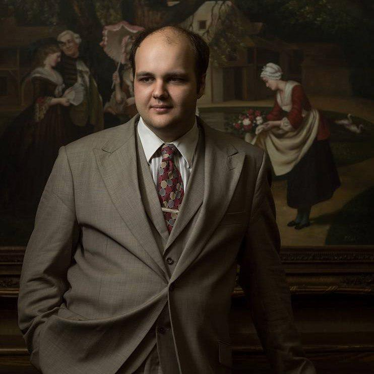
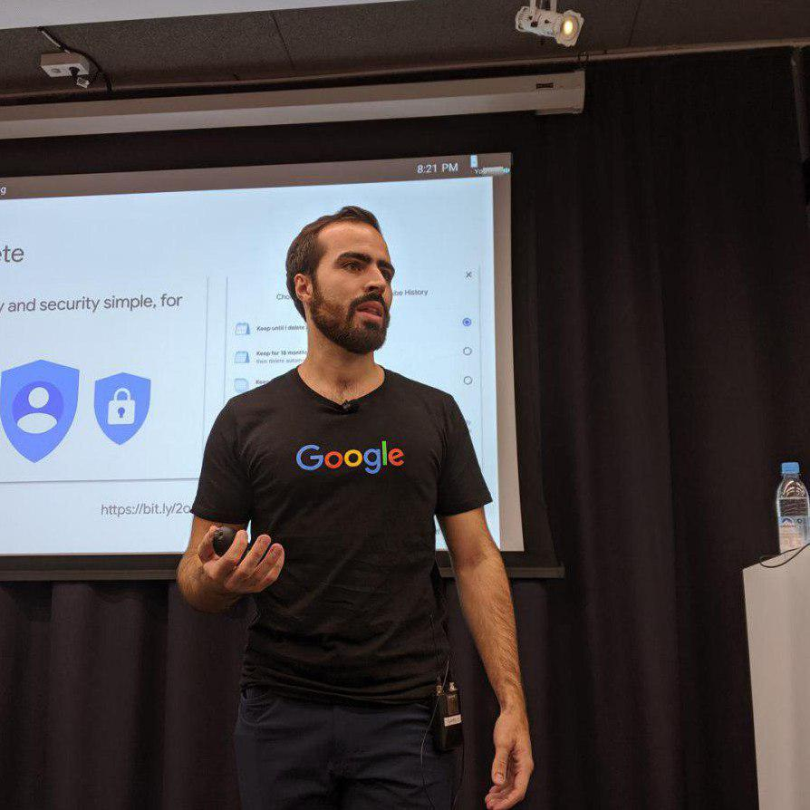

Speakers

Peter Sikachev
Senior Graphics Programmer at CD PROJEKT RED
Peter Sikachev has been in the game development industry since
2011. He has since worked on such titles as Rise of the Tomb Raider, Deus Ex: Mankind
Divided, Red Dead Redemption 2 and others. Peter is currently employed as a senior
graphics programmer at CD PROJEKT RED, working on Cyberpunk 2077.
Peter is a guest speaker at Talk a Bit 2020 and he is going to talk a bit about
“Graphics Technology Evolution During the Current Generation of Consoles”, where we will
discuss key game graphics technologies that became industry standard during the current
generation of consoles (PlayStation 4, Xbox One).

André Lago
Software Engineer at Google
André is a Software Engineer and has been working on some of
Google's User-Facing Privacy products for over a year, being the Technical Lead for both
Activity Controls and Google Dashboard.
André is a guest speaker at Talk a Bit 2020 and he is going to talk a bit about “The
past, present and future of Privacy”. Privacy is an extremely important topic, assuming
a crucial role in the design and develop of many products. During this talk, we'll go
over the history of Privacy at Google and what its future looks like.
 Rob van Kranenburg
Ecosystem Manager at Tagitsmart and Next Generation
Internet
Rob van Kranenburg
Ecosystem Manager at Tagitsmart and Next Generation
Internet
Rob works as Ecosystem Manager for the EU projects Tagitsmart and
Next Generation Internet. He wrote "The Internet of Things. A critique of ambient
technology and the all-seeing network of RFID" and, together with Christian Nold, he
published "Situated Technologies Pamphlets 8: The Internet of People for a Post-Oil
World".
He is co-founder of BricoLabs and co-editor of "Enabling Things to Talk: Designing IoT
solutions with the IoT Architectural Reference Model". He is a DeTao Master IoT.
Rob is a guest speaker at Talk a Bit 2020 and he is going to talk a bit about "Building
an Internet for Things and Robots and an Internet of Humans for Everyday Life". The
Internet of Things is in, its essence, the seamless flow between the multiple area
networks ranging from Body Area Network, such as wearables, to Very Wide Area Network,
such as the smart city as e-gov services everywhere no longer tied to physical
locations.
João Neto
Software Engineer at Mercedes AMG F1
João Neto is working at Mercedes AMG F1, six-time double Formula 1
champions, and is part of the Performance Engineering department as a Software Engineer.
An Integrated Masters' in Informatics Engineering and Computation student between 2012
and 2017, joined Doctoral Program in Informatics Engineering for a year before going to
the United Kingdom, where he now resides.
João is a guest speaker at Talk a Bit 2020 and he is going to talk a bit about "The
Challenges of Software Engineering in F1".
Ana Paiva
Coordinator at GAIPS
Ana Paiva is Coordinator of GAIPS – Grupo de Investigação em
Inteligência Artificial para as Pessoas e a Sociedade do INESC-ID and a professor in the
Informatics Engineering Department at IST. She was a part of the committee for AI and
robotics at the World Economic Forum (GAC) and was recently elected as fellow of the
European Association for Artificial Intelligence. She is a Master in Electrical and
Computer Engineering by IST and Doctorate in Artificial Intelligence by the University
of Lancaster.
For the last 20 years she has been developing her research in the area of Artificial
Intelligence, being also involved in other projects, such as combating cyberbullying.
She believes artificial intelligence capable of social competences is the future,
motivating the development of a better society.
Ana is a guest speaker at Talk a Bit 2020 and she is going to talk a bit about "Social
Artificial Intelligence".